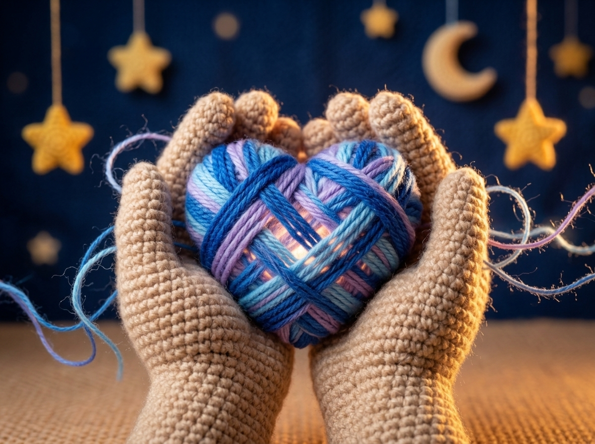

Mi historia, nuestra historia
Bienvenidos a este espacio. Antes de empezar a subir contenido, antes de dar consejos o hablar de herramientas, quiero que conozcas nuestra historia y lo que hemos vivido durante estos primeros cinco años en el mundo de la diversidad.
Te invito a ti, que hoy estás leyendo mi publicación y deseas conocer más sobre el autismo, o que quizás estás iniciando este proceso que duele. Sé qué dolor sientes; sé lo que es tener el alma rota… sin siquiera saber bien cómo se siente el alma.
“Aquí estamos para aprender juntos. Como una madeja de lana que poco a poco se desenreda, iremos tejiendo lo vivido semana tras semana, porque merece ser contado para que sepas que se puede encontrar paz al mirar a los ojos a nuestros hijos.”
Por eso, antes de arrancar, quiero compartirte nuestra historia real, sin filtros, a través de una serie de capítulos —nuestras Hiladas— que estaremos subiendo semana tras semana.
💙 Una pausa obligatoria para agradecer
Antes de dar la primera puntada de este viaje, quiero agradecer a mis dos grandes maestros y motores, quienes me abrieron la puerta a este universo: mis hijos, Gabriel y Jerónimo. Gracias a mi esposo Rubén, por ser mi compañero, mi soporte y sostener el hogar, y a toda la familia que ha caminado a mi lado. A todas esas personas que de corazón nos han apoyado, se han preocupado por nuestro proceso y han sido parte de él.
Gracias también a todas las personas que hoy hacen posible que este sueño y este espacio de resistencia y amor se conviertan en una realidad.
Bienvenidos a Hilos Azules | El arte de acompañarnos en el mundo azul.
